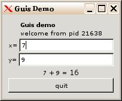
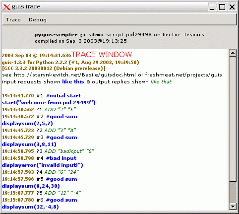

GUIS - a GUI widget server
release 1.6 on Thu, 30 Dec 2004 14:14:05 +0100
prcsproj 1.62
Table of Contents
| Software Description |
| Name |
GUIS |
| License |
GNU General Public License |
| Author |
Basile Starynkevitch |
| Version |
1.6 |
| Development system |
Linux/Debian/Sid x86 |
| Programming Language |
C |
| Software Dependencies |
| GTK 2.4 (or 2.2) |
| and related libraries |
| (Glib, Pango, Atk) |
required |
| Python 2.3 (or 2.2) |
recommended |
| PyGTK 2.2 |
recommended |
| Ruby 1.8 |
recommended |
| Ryby-Gnome2 0.11.x |
recommended |
| Slang 1.4.x |
optional |
| Slgtk 0.5.x |
optional |
Please be nice to send me (basile@starynkevitch.net) an email
if you use this information and this Guis software.
Guis is available (as a gnuzipped source tarball) from
http://www.starynkevitch.net/Basile/guis-1.6.tar.gz
and this document is on
http://www.starynkevitch.net/Basile/guisdoc.html. See also my
home page on http://www.starynkevitch.net/Basile/ or Guis page
http://freshmeat.net/projects/guis/ on Freshmeat for
announcement of newer versions. Please feel free to send suggestions,
patches, criticisms, etc...
1 Overview and usage
This section gives a short overview with the classical adder example.
Then the usage details are given.
1.1 Motivations and related stuff
Guis is a small widget server. It is a gtk2 (see
http://www.gtk.org/) based program listening on a pipe for
widget requests (requests are Python [or Ruby] scripts - see
http://www.python.org/ using the PyGTK 2.0 binding of GTK2 to Python
- see http://www.daa.com.au/~james/software/pygtk/) and
outputting events or replies Guis is useful for programs (in particular, setuid programs or (ruby,ocaml,perl...) scripts)
which do not want to link in a full widget toolkit but prefer to
delegate the user interface to another process.
The choice of the scripting language is not critical provided it does
have a full Gtk2 binding. Porting Guis to another scripting language
should be easy.
(Many years ago, I was a satisfied user of Sun OpenWindows
system with its programmable NeWS [widget] server. I still miss that
widget server (see a message I posted in october 1993 on
http://www.zendo.com/vsta/mail/1/0146.html which is copied on
http://starynkevitch.net/Basile/NeWS_descr_oct_1993.html) I don't
understead why the NeWS team, which also probably designed Java, did
not consider to embed the JVM inside the X11 server, as a standard
X11 extension, and embedding a toolkit inside Java, like Swing does,
is not an answer.)
A similar project is entity - see http://www.entity.cx/.
The major difference between entity and guis is that guis is a server (listening for orders on a pipe...) while entity is a script engine.
The IRAF widget server - see
http://iraf.noao.edu/iraf/web/projects/x11iraf/ had similar goals.
And PicoGui http://picogui.org/ is also server based.
The XUL system of mozilla (see http://www.xulplanet.com/) also
describes an interface with XML.
The (previously Berlin, now) Fresco server should be a corba server
for widgets - which seems nearly dormant. see
http://www.fresco.org/
1.2 Introduction
Guis is a graphical user interface program communication with a
client application (using separate protocols). The application send
widget building requests to Guis (so these requests are input
for Guis) and handles widget events sent from Guis.
Usually Guis is started with a small Python initial script which
defines common functions and build some widgets. The requests are
Python source code chunks. The replies (i.e. events sent back from
Guis to the application) are just some textual lines sent (by
some Python code calling guis_send).
Actually, Guis is strongly dependent on GTK2, and depends less
of Python. The code is designed to make Guis easily
portable1
to any other scripting interpreter able to evaluate requests in
textual strings, provided this interpreter has a binding to GTK2. The
only reason I use Python here is the availability of a nearly complete
binding of Python to GTK2. (I would prefer some other scripting
languages). To remind that Guis is using Python its binary is
called pyguis.
Since version 1.3, Guis is also interfaced to Ruby. See section
4 below.
The initial script (or the application) is responsible for installing
appropriate callbacks with the connect primitive (or equivalent)
of the scripting language (Python or Ruby).
IMPORTANT
Callbacks in Guis should be robust: callbacks cannot raise
uncaught exceptions (because they are run by the gtk_main_loop in Guis, outside of the (Python or Ruby...)
interpreter. Applications should encapsulate callbacks with the
appropriate mechanism (catch ... ) in the scripts.
1.2.2 initial script
Usually, Guis runs an initial script (in Python or Ruby) which
is interpreted by the scripting language before entering the gtk_main_loop. This initial script usually builds the widget and
defines some application specific functions (to implement the protocol
specific to your application).
The initial script is run once. It is specified with the -s
option or with the -scripter trick. See below 2.2
and the man page.
You might (if possible) end your initial script with a call to gtk_main_loop as provided by the (Python or Ruby) GTK2 binding.
Calling it will make the request evaluation better under control and
might permit exceptions in callbacks (see your documentation of the
GTK binding you are using). Then you have to exit explicitly Guis (by calling the exit primitive of Python or Ruby) or
tell Guis (using guis_main_loop_in_script)
that you call the main loop.
I still strongly advise against uncaught exceptions in callbacks.
Every request sent from the application to Guis should end with
two consecutive newline2 characters coded in C as \n\n or
with a formfeed (coded in C as \f, decimal 12).
Obviously requests cannot contain (inside) a double newline which is a
convention suitable for most scripting languages (including Python,
Ruby, Ocaml, Lua, Rep-Lisp, Slang, ...).
A convenient way to debug Guis initial scripts is to run pyguis with an explicit FIFO input: make it with mkfifo
/tmp/fifo and then run pyguis -s yourscript -i /tmp/fifo -o
-; in another xterm, run cat >> /tmp/fifo and don't forget to
end every request with a double newline (ie return) character.
Events or replies sent from Guis to the application are single
lines (maybe very long) ended with a newline. They should not contain
any control character (eg newline or formfeed) inside. Requests and
replies are asynchronous (a request can be sent without any replies
and vice versa).
The driving idea of Guis is that the input and output protocols are
tailored to your application. On the input side (requests from
your application to Guis) the protocol is usually made of calls
to specific functions defined in the initial script. On the output
side (replies or events from Guis to your application) the
protocol is defined by sending (thru an appropriate primitive, usually
guis_send, of the scripting language) arbitrary lines to your
application from callbacks.
1.2.4 other toolkits (Qt3)?
It would be interesting to have a similar approach with QT3. I tried,
and leave some (bad, incomplete, not even compilable) C++ code under
the bad_qt_stuff/ directory of this Guis. Feel free to
reuse this code (under a GNU license). My main problem was lack of
good binding to QT3 and threading problems (notably threads are nearly
incompatible with an embedded Python).
1.3 Small example
For illustration purpose, suppose we have an application which
computes the sum of 2 integers, and we want to give it a nice
graphical interface containing two (editable) textual entry widgets, a
quit button, and a label widget displaying the sum.

Figure 1: Simple example demo window
We have to think first about the messages sent from the application to
Guis. We need first to start the interface (giving some
nice title). We will need to display a sum using displaysum and
to display an error message using displayerror. And
we need to stop the demo, thru a stopdemo function. All these
functions are Python functions defined in the initial script file.
We also need to define the messages sent from Guis back to the
application. We will send a plain END for end, and a more
complex message starting with ADD to ask the application to make
an addition (displaying the result with a displaysum request.
The ADD message should contain the textual content of the two
entry widgets. Since the textual content can be anything (it could
even contain control characters like newlines) it should be encoded.
We use a C like encoding convention, so will usually send ADD "1"
"3" -or even ADD "\t1" "3" if the first entry starts
with a tab3. The application is in
charge of checking that the entries contain valid numbers.
The Guis server program buffers all input (python requests) and
output (event replies), reading and writing as soon as possible.
A typical exchange between the application and Guis might be as
follow; first the application starts and sends
start("pid 1234")
Then Guis shows the window and let the user interact with it. Some
user interaction makes Guis send back messages like
ADD "2" "5"
To which the application responds with
displaysum(2,5,7)
When the user closes the window, Guis send back
END
To which the application responds with
stopdemo()
and then exits.
When run with the -T flag, Guis opens a window to show the
trace of all requests and replies (this is useful for script
and application debugging):

Figure 2: Protocol trace window
1.3.2 initial Python script
We write a small Python initial script. A special trick in Guis
is that if Guis is invoked with a name (i.e. argv[0] in C
parlance) ending with -scripter then the next (second) argument
is the initial script name. Hence we can start our script with
#! /usr/bin/env pyguis-scripter
# file guisdemo_script in -*- python -*-
With such a trick, our initial script can be invoked by any pyguis-scripter found in our $PATH. We make it a symbolic
link to the pyguis executable.
We need to tell python to use the gtk module (provided by pygtk)
and the guis module (builtin inside pyguis).
import gtk
import guis
Next, we need to define a callback used by the quit button; it
just sends back the END string to the application
def end_cb(*args):
guis.guis_send("END")
We also define a callback used when text entries are updated. It uses
the guis.to_guis primitive to convert a C string to its textual
representation but we could have used Python repr function.
We need to define the start function, invoked by the application
in its first request, to build the graphical widgets and connect them
to callbacks. It first builds a window and its contained vertical box
(using GTK2 calls in Python):
def start(welcomsg):
global window, xent, yent, sumlab
window = gtk.Window(gtk.WINDOW_TOPLEVEL)
window.set_title("Guis Demo")
vbox = gtk.VBox(gtk.FALSE,2)
window.add(vbox)
Then it builds the other widgets (details deleted here, see the source
of guisdemo_script file). At last, it makes the quit
button, connect it to the end_cb callback, add it into vbox and show all of the window:
# ...
quitbut = gtk.Button("quit")
quitbut.connect("clicked", end_cb)
vbox.add(quitbut)
window.show_all()
We need to define the displaysum function
def displaysum(x,y,sum):
sumlab.set_markup(('<i>%d</i> + <i>%d</i>' % (x,y))
+ (' = <big>%d</big>' % sum))
We need to define the displayerror function. To avoid
messing the Gtk2 (pango provided) XML-like markup, we convert the
message to its XML representation (i.e. using <
for < etc...) using the guis.xml_coded primitive.
def displayerror(message):
sumlab.set_markup('<b>ERROR:</b> '
+ (guis.xml_coded(message)))
A stopdemo function is also needed (see the source file).
1.3.3 client application
We suppose the client application is written in C. You can code it in
any language able to communicate on channels in a textual way. We
comment here parts of the file guisdemo_client.c. You don't need
to link any Guis specific library to it!
We declare a big line buffer, and the requests and replies files. We
could also use the glibc specific getline function which
dynamically allocates the line buffer.
char linbuf[1024];
FILE *toguis = stdout;
FILE *fromguis = stdin;
At first, we want to send a request like
start("<b>guis</b> demo"). Requests may start with a
comment used to help identify them in error messages4.
fprintf (toguis, "#initial start\n"
"start(\"pid %d\")\n\n",
(int) getpid ());
fflush (toguis);
Never forget to flush your request channel very often, and to end
every request with two newlines.
Of course we need a loop to read events (or replies) messages from
Guis - each of them is a single (sometimes very long) line ended
with a single newline.
while (!feof (fromguis)) {
fgets (linbuf, sizeof (linbuf) - 1, fromguis);
if the reply line starts with ADD we scan it appropriately and ask
to display a fancy line like ``2 + 3 = 5''
otherwise (bad scan because of non-numeric entries) we display
``invalid input''
if (!strncmp (linbuf, "ADD", 3)) {
int x=0, y=0, pos=0;
if (sscanf (linbuf, "ADD \"%d\" \"%d\" %n",
&x, &y, &pos) > 0 && pos > 0) {
fprintf (toguis, "#good sum\n"
"displaysum(%d,%d,%d)\n\n",
x, y, x + y);
} else {
fprintf (toguis, "#bad input\n"
"displayerror(\"bad input\")\n\n");
}
If the reply is END we stop gently (by sending a stopdemo()
request and exiting):
} else if (!strncmp (linbuf, "END", 3)) {
fprintf (toguis, "#stop\n" "stopdemo()\n\n");
fflush (toguis);
sleep (1);
exit (0);
}
After warning against unexpected input lines, we flush the request
channel and end the loop.
fflush (toguis);
}; // end of while feof
Normally the while loop should never be ended, since our guis python
script should signal termination with END (handled above).
2 Reference
2.1 installing Guis
You need Python (2.2.x or 2.3.y from http://www.python.org/),
GTK (2.2 or better from http://www.gtk.org/) and PyGTK (1.99.18
or 2.0 or better from
http://www.daa.com.au/~james/software/pygtk/) to build pyguis (the Python version of Guis). You need Ruby (1.8.x)
from http://www.ruby-lang.org/ and ruby-gnome 0.9.1 or later from
http://ruby-gnome2.sourceforge.jp/ to build ruguis (the
Ruby version of Guis). I built a thread-less
Python-2.25 which works with Guis. I am using GNU gcc (3.3)
and GNU make (3.80). You may add a local _local.mk file
containing definitions for your installation, such as PREFIX=/usr, CC=gcc-3.3, PYTHONCFLAGS=-I/usr/include/python2.2 or PYTHONLDFLAGS=-lpython2.2 RUBY=ruby etc... you may even
edit the Makefile.
First configure, either with make config or with the ./Configure script. Run it with -help to get usage
information.
Then run make then make install (which usually requires to be
root).
You may build only the Ruby version with make ruguis or only the
Python version with make pyguis.
To run the demo, you probably need to add . or the Guis
source directory to your $PATH before running guis_demo.sh or you can run the guisdemo_script -p
guisdemo_client -T command. use guisdemo_rubyscript to run
the Ruby version.
2.2 invoking Guis
See the man page in the source distribution for complete reference of
invocation, or invoke the binay with the --help option.
Guis is usually invoked as pyguis command, or indirectly
as pyguis-scripter if started by its initial script.
Guis can be started in a slave fashion (after the application has
started) by specifing its input and output channels (thru the -i
and -o options). You may specify file descriptors or paths as
channels.
Guis can also be started as a master, by giving the application
command as argument with -p. You usually need to quote this
argument (because of your shell) unless the command has no spaces!
The -T option is interesting to show the exchange between guis and its application in a separate window. This is very useful
to debug your initial script or your application.
The -D option (disabled with -DNDEBUG compile flag) show
lots of debugging information (to debug pyguis itself).
The -L option writes all requests into a log file.
the -I or --input-enconding option set the input encoding
(as supported by GLib2 on input channels). Likewise for -O or --output-enconding
3 Guis for Python
3.1 invocation
as usual, see section 2.2 above.
3.1.1 added Python primitives
In alphabetical order, here are the names wired in the guis
builtin Python module. You need of course to learn and use the modules
provided by pygtk to actually build any GTK2 widget! You should
not explicitly call gtk_main_loop from Python, since it is is
already called by pyguis
3.1.2 end_of_input_hook
With a callable argument, sets the hook called at end of input. Always
return the previous hook (even without any arguments). You probably
also need to set the end timeout using end_timeout below.
3.1.3 end_timeout
Get (without arguments) or set (with an integer argument) the timeout
in milliseconds after which pyguis exits at end of input. Useful
with end_of_input_hook above.
Send the string argument on the output channel to the application. The
string should not contain control characters (this is not checked)
otherwise the application might have trouble scanning it. A newline is
added if needed. (You may use many Python packages to build the sent
string; eg you could send XML stuff).
3.1.5 main_loop_in_script
Get (without argument) or set (with a truth-value argument) the flag
telling Guis that the main loop gtk_main was called from
the initial script.
3.1.6 nb_replies
Get (without arguments) the number of sent replies (event lines sent
to application). You might set this number with an integer argument
(but I see no reason to do this).
3.1.7 nb_requests
Get the number of processed Python requests. You might set this number
with an integer argument (but I see no reason to do this).
3.1.8 pipe_check_period
Get (without arguments) or set (with an integer argument) the period
in milliseconds (should be 0 or 50 to 10000) to check for application
termination (in master mode). Useful with end_of_input_hook
above.
Convert an object (or many of them, considered as a tuple) to a string
sendable to the application using the following algorithm:
- if the object is string, represent it in C syntax (except that
double quotes are escaped as
\Q so they are only string
delimiters in the converted string) , so the string made of 4
characters (a, tabulation, double-quote, z) is converted to the 7
character string "a\t\Qz"
- if the object is an integer, represent it in decimal notation
- if the object is a double, represent it like in C with a # prefix6, eg
#3.14
- if the object is a tuple, convert each component using the same
to_guis builtin function and catenate each substring with
spaces for separation - if any component fails to be converted, the
entire tuple conversion fails.
- if the object has a to_guis attribute, fetch it: if it is
a string, return it, if it is callable, apply it to the object.
- if the object has a to_guis method, call it (without any
arguments except the recieving object).
- otherwise, fail
Quickly convert a Python string or unicode to its XML representation
(so the 3 characters string a<b is converted to the 6
characters string a<b), escaping characters per XML
requirements:
-
& as &
' as '
" as "
< as <
> as >
- other strict ASCII printable characters are kept identical
- all other characters including control and IsoLatin1 accentuated
characters like é à are represented by a numerical entity
(character number in decimal) like
ç for the lowercase c with cedilla ç
The result of guis.xml_coded is a string with only ASCII
printable characters (coded 32-126).
4 Guis with Ruby
Guis has been ported to Ruby 1.8.
See http://www.ruby-lang.org/ for more on Ruby. The binary name
is ruguis (including the ruguis-scripter trick) and has
the same invocation as the pyguis (Python) version. The Ruby
port is in the file ru_gguis.c
This port uses the ruby-gnome2 binding of GTK2. See
http://ruby-gnome2.sourceforge.jp/.
The demo works in a Ruby way - it is in the guisdemo_rubyscript
file and can be run as
ruguis -T -D -s guisdemo_rubyscript -p guisdemo_client
(provided that . is inside your $PATH)
4.1 open questions
I don't know if a builtin module can have virtual variables (as
defined by the rb_define_virtual_variable C function of the
Ruby runtime).
I would like to print more (e.g. the current environment in debug_extra) but I don't know how to code it.
4.2 Ruby API
There is a builtin Guis Ruby module. It contains the guis_send primitive to send a string back to the application.
$guis_nbreq, $guis_nbsend and $guis_pipecheckperiod
are (global) virtual variables (implemented thru rb_define_virtual_variable C function).
$guis_main_loop_in_script is a global variable which when
set to a true value avoid calling gtk_main after interpreting
the initial script (which should hence call Gtk.main
explicitly).
Conversion to XML notation is done by the to_xml method added
to the existing String class.
Conversion to a C-like notation (like to_guis in Python above
3.1.9) is done by the to_guis method with built-in
implementations for arrays, strings, integers, floats, symbols. The
user could add other methods to existing classes by Ruby code like
ExistingClass.class_eval {
def to_guis
return "result"
end
}
Then end of input hook is settable with
Guis::on_end_of_input do |timeout|
# user end input hook
done
To remove the end of input hook, just do
#removing end of input hook
Guis::on_end_of_input
5 experimental and incomplete Slang version of GUIS using slgtk
See http://s-lang.org/ for the Slang interpreter. See
http://space.mit.edu/cxc/software/slang/modules/slgtk for the
Slgtk binding of Slang to GTK.
The GUIS port to Slang is incomplete and barely tested. See the source
code for details. Feedback is welcome.
6 Feedback
6.1 Feedback welcome
Please send comments, criticisms, suggestions and patches to
basile_NOSPAM@starynkevitch.net.invalid (but remove the _NOSPAM and .invalid from the email) mentioning guis
in the subject line. Feel free to suggestion new features. Tell me
about any success stories (ie Guis use) in your applications!
I am interested by your feedback (to this
guisdoc page)
6.2 Change log
- version 1.6
- (december 30, 2004) - minor code clean.
- version 1.5
- (may 10, 2004) - ported to Gtk2.2, added Slang
preliminary port (and non-working port to Perl).
- version 1.4
- (september 5, 2003) bugfix (read buffer uses GString) and added
guis_main_loop_in_script),
with both Python2.2 and Python2.3 support.
- version 1.3
- (september 2, 2003) contains the experimental Ruby port
(and warns against exception in callbacks).
-
1.3.1 added word wrap in
trace window,
- 1.3.2 added logfiles with -L with the Gtk.init
requirement in user scripts for Ruby
- 1.3.3 (september 3, 2002) shows the versions info
in trace window
- 1.3.4 (september 4, 2002) removed the Gtk.init
requirement in the user initial script
- version 1.2
- (august 31, 2003) minor fixes: just added the guis.xml_coded primitive and updated the demo and the
documentation.
- version 1.1
- (august 30, 2003) made a major switch to Python using
PyGTK previous versions used Lua).
- versions <= 0.3
- (march 22, 2003) and older was Lua based
(with a Gtk binding to Lua generated by a CommonLisp script)
- 1
- To port Guis to another language you just have to
link gguis.c with a file similar to py_guis.c for your
scripting language which provides the following functions : guis_initialize_interpreter(void) (called once to initialise the
interpreter), guis_load_initial_script(char* scriptname) (called
once with either the initial script name -a file path- or NULL),
guis_interpret_request(char* request) (called for every request),
and guis_end_of_input_hook(int timeout) (called at end of input
with a timeout in milliseconds). These last 3 functions should
return 0 if successful, or a static C string describing the error.
- 2
- The newline is coded decimal 10 in
ASCII or IsoLatin1
- 3
- How to enter a tab character inside a Gtk entry
widget is left as an exercise to the reader.
- 4
- Actually
requests are identified by their first line in error messages.
- 5
- I passed the -disable-threads option to Python's
configure script
- 6
- Distinguishing floating numbers from integers
with a prefix should make parsing easier for the application.
This document was translated from LATEX by
HEVEA.